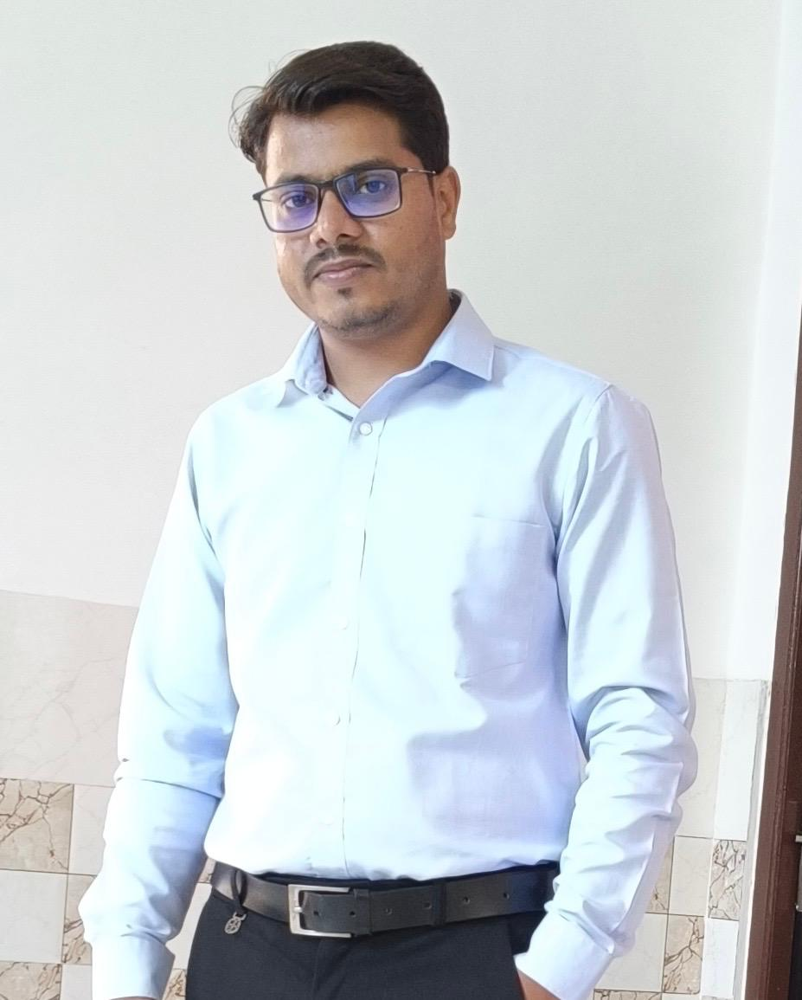

At Tracevia Forensics Services Private Limited, we believe that every incident leaves behind a trace, and within every trace lies the truth.
The name Tracevia reflects the philosophy that drives our work. "Trace" represents the physical, digital, financial, and documentary evidence left behind during an incident or crime. "Via", meaning through, signifies our scientific approach of uncovering facts through the traces that evidence leaves. Together, Tracevia represents our commitment to discovering the truth through forensic science and evidence-based investigation.
We are a multidisciplinary forensic and investigation company dedicated to delivering accurate, unbiased, and scientifically supported solutions to insurance companies, corporate organisations, legal professionals, government agencies, law enforcement authorities, and individual clients.
Our expertise spans questioned document examination, fingerprint analysis, audio and video authentication, forensic accounting and auditing, crime scene investigation, professional forensic education and training, and extends to motor and property claim investigations and accident reconstruction. Every investigation is conducted with the highest standards of professionalism, integrity, confidentiality, and scientific precision.
At Tracevia Forensics Services Private Limited, we understand that decisions made on the basis of forensic evidence can have significant legal, financial, and social implications. That is why our experts follow internationally accepted forensic methodologies, advanced analytical techniques, and stringent quality standards to ensure that every opinion we provide is objective, reliable, and legally defensible.
We don't rely on assumptions—we rely on evidence. From reconstructing complex accidents and detecting insurance fraud to authenticating documents and analysing digital evidence, our mission is to uncover facts that stand up to scrutiny in courts, investigations, and corporate decision-making.
We remain impartial, ethical, and committed to presenting facts exactly as they are.
Our conclusions are based on validated forensic principles, recognised methodologies, and objective analysis.
Every investigation is handled with complete discretion, protecting the privacy and interests of our clients.
Precision and attention to detail define every examination, analysis, and report we produce.
We deliver dependable services with accountability, transparency, and respect for legal and standards.
We continuously embrace advancements in forensic science and technology to provide high quality solutions.
To become one of India's most trusted and respected forensic science organisations by delivering innovative, reliable, and scientifically sound investigative solutions that promote justice, transparency, and accountability.
Every fingerprint, every document, every financial transaction, every accident scene, and every digital record tells a story. At Tracevia Forensics Services Private Limited, our purpose is to uncover that story through the power of forensic science—transforming evidence into clarity, uncertainty into facts, and questions into answers.
Guiding Tracevia Forensics with scientific precision, academic excellence, and extensive industry experience.
Dr. Das Anamika is the Director of Tracevia Forensics Services Pvt. Ltd., providing strategic leadership in scientific research, forensic innovation, and quality-driven investigative practices. She is committed to advancing evidence-based forensic investigations...
Read full bio →
Mr. Mukul Kumar is the Director of Tracevia Forensics Services Pvt. Ltd., leading the organisation with a vision to deliver truth through scientific investigation, integrity, and evidence-based forensic analysis. He plays a pivotal role in driving...
Read full bio →